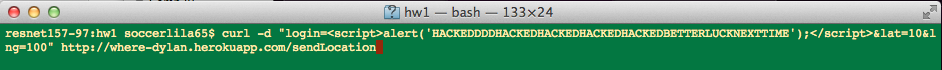
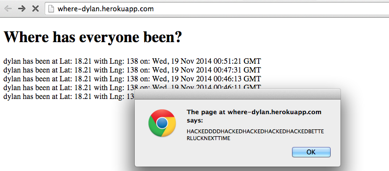
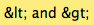
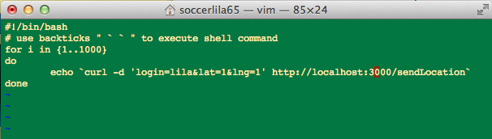
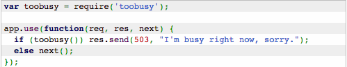
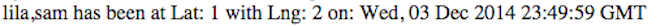
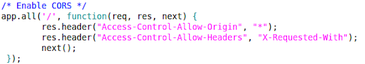

This is a report on the security of Assignment 3 developed by Dylan Phelan. It is a server-side MongoDB GET/POST application running on heroku that deals with location checkins (login, latitude, and longitude) and allows you to search the database for all location checkins for a specificied login name. There is very minimal security in this application and it is susceptible to a number of security breaches, which will be identified and discussed in this document.
I used CURL to "black box" test on the Dylan's heroku application and also "white box" test a local copy of the application. I then reviewed the code and found a few places where more rigorous code would have prevented some of the security breaches that I made.
Almost all of the security flaws I found in Dylan's web application were related to user/client input and could be prevented by sanatizing that input before inserting it into the database and displaying it on the page. The Database Overload issue was the only one that is not as straightfoward to prevent and actually requires some conceptualizing by the programmer about how much power to give the client.
Location: /sendLocation POST API
Severity: High! In the wrong hands, this web application could be broken down using any javascript that a hacker chooses to use. The hacker basically can change or manipulate any HTML element as well and steal cookie information.
To identify this problem, I basically blindly posted data using "curl" from my own workstation to the heroku address which contained javascript embedded into the "login" field. The specific command I used was:
And the result was...

This issue can be resolved by checking user input and especially preventing the insertion of code that may contain css/html/javascript. In a Node.js app this can be done by using an html sanitizer plugin, or you sould simply find and replace all "<" and ">" characters with 
Additionally, I was able to submit an alert script embedded into the "lat" and "lng" fields. After a more closer look at the source code, I could see that the lat and lng fields are not converted into floating point numbers before being inserted into the mongo database. Cross-Site Scripting could be avoided by converting the request body variables into floats before inserting them using float()
Location: /sendLocation POST API
Severity: Medium. It's definately not a good practice to allow the client to insert an infinite amount of times into the database. In general, you shouldn't trust the client to be respectful of the database's limits and capacities. This could potentially slow down the server to a large degree and be a burden for any other clients using the server.
I essentially used a script to curl data to the server thousands of times. I used a bash script

and varied the size of the for loop each time I ran the script. It took about 5 minutes to curl data 1000 times. The server didn't run noticably slower but one can imagine that if the bash script kept posting to the server for hours or days continuously it would not be good for the performance of server.
To prevent the server from potentially crashing, the solution would be to limit the amount of POST requests a user can submit at one time. After some research, I found Node.js has an useful additional library called toobusy that you can install with "npm install toobusy" and then include this code (taken from https://hacks.mozilla.org/2013/01/building-a-node-js-server-that-wont-melt-a-node-js-holiday-season-part-5/)

Location: /sendLocation POST API
Severity: Low. Although it is difficult to stop ficticious user input on a lot of sites, it does lower the credibility of your web application and thus can be deemed as low level security issue.
For this issue, I was working with the local copy of the server. I tested the various different ways you can manipulate the POST request fields. For instance the commands:
all will successfully return a JSON string of the last 100 checkins, even though it defines two separate login fields or a field that doesn't exist. The former gets added to the database and displayed in the JSON as

Additionally, the user can obviously fake their location or even give a incorrect latitute and longitude. The web application as it stands does not check that the latitude and longitude actually exist on the map or that they are numbers. This will invite the user to fill the database with absurd data such as
False user data is on some level unavoidable but certain measures can be taken to prevent particularly bad client data. For instance, in this application, the programmer should have made sure that the latitude was a number between -85 and -85 and that the longitude was a number between -180 and 180 with a simple IF statement.
Location: All of the GET APIS
Severity: Medium. Note: If this were a live application that held important personal data, then the CORS * accesibility would be a high security threat (all of the data is available to the public).
The part of Dylan's code under scrutiny is

This command essentially allows any domain to use the application's GET and POST APIs. In this way, it is certainly dangerous to make your application vulnerable to the World Wide Web.
The safer programming practice would be to only allow certain websites to access your APIs which you can specify in that same code snippet in place of *
Many simple programming steps can be taken to tighten security of this server and by extension, the security of any client that uses the server. Assignment 3 has security flaws by nature because it allows POST requests without authentification from anywhere and however many times you want. Sanitization of code from users is crucial and necessary because user input is not reliable. A proper restructuring of code to enhance security would cost about 400$ (freelance). Worth it.